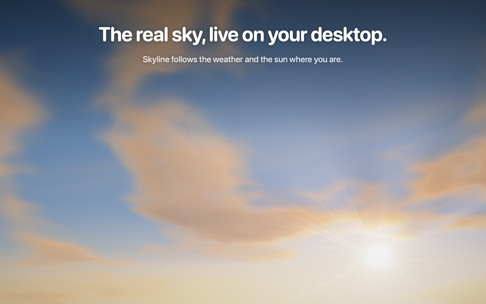

Skyline
The real sky, live on your Mac's desktop.

Support
Questions
Where is the app after I open it?
Skyline lives in the menu bar (the cloud icon at the top of the screen), not in the Dock. Click it and choose Settings… to change anything.
I don't see the sky on my desktop.
The sky sits behind your windows. Show the desktop (swipe out with four fingers, or press F11) to see it. If your trial has ended, choose a plan in Settings to bring it back.
Can I use it without sharing my location?
Yes. Deny location access and type a city in Settings → Desktop → Location.
How do I install the screensaver?
Open Settings → Desktop → Screen saver → Install. macOS will ask you to confirm, then choose Skyline in System Settings → Screen Saver.
Does it drain my battery?
Skyline pauses itself whenever your desktop is covered and runs at a lower frame rate in Low Power Mode. You can also pick a lower quality in Settings.
How do I cancel my subscription or restore a purchase?
Subscriptions are managed by Apple: open the App Store, click your name, then Account Settings → Subscriptions. To restore a purchase on a new Mac, click Restore in Skyline's Settings.